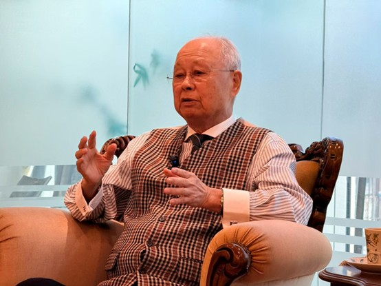
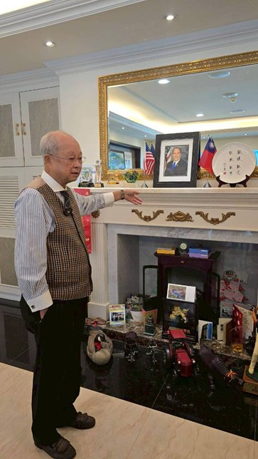

紀文豪的人生哲學與個人品質深受其成長背景影響。早年家境優渥，後因家道中落經歷磨難，使其在處世上展現出強大的韌性與利他主義精神。其核心思想可歸納為「彈性」、「堅持」與「價值創造」。
韌性與轉化能力：面對突如其來的家道中落，他能將巨大的現實壓力轉化為向上的原動力。他曾自覺性格粗心，但透過高度的自律將弱點轉化為極其謹慎細膩的行事風格，體現了正向進取的特質。

和學生分享人生經驗的紀文豪
他秉持「以人為善」與「愛與服務」的精神，深信真誠待人必能獲得回饋。在國際商務往來中，他強調誠信與人格特質是贏得國際信任、吸引機會不請自來的關鍵。
服務熱忱與領導力：童年時期的「囝仔頭王」性格，使其具備調解紛爭的領導特質。他樂於助人且不計較酬勞，將協助他人視為學習解決問題與增進實用知識的機會。

紀文豪正在介紹自己的過去
在社會潮流更迭中，他具備敏銳的洞察力，不隨波逐流。在事業經營上，他推崇「開發產地、降低通路成本」的效率思維，並專注於完成每個階段「對的小事」，腳踏實地累積成果。
「四能」處世法：「能讓、能忍、能教、能等。」